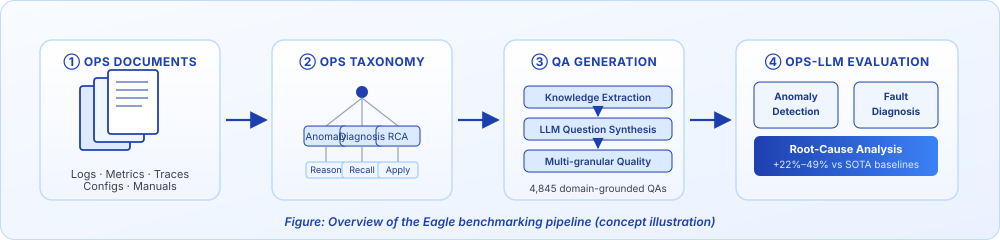

FSE 2026 · Industry
Lead Author

Eagle: Leveraging Operations Documents for Comprehensive Benchmark Question Generation
An end-to-end framework deployed inside Huawei that ingests enterprise product documentation and synthesizes 4,845 domain-grounded QA pairs across logs, metrics, traces and configurations. Eagle improves expert-rated rubric scores by 22%–49% over SOTA baselines.